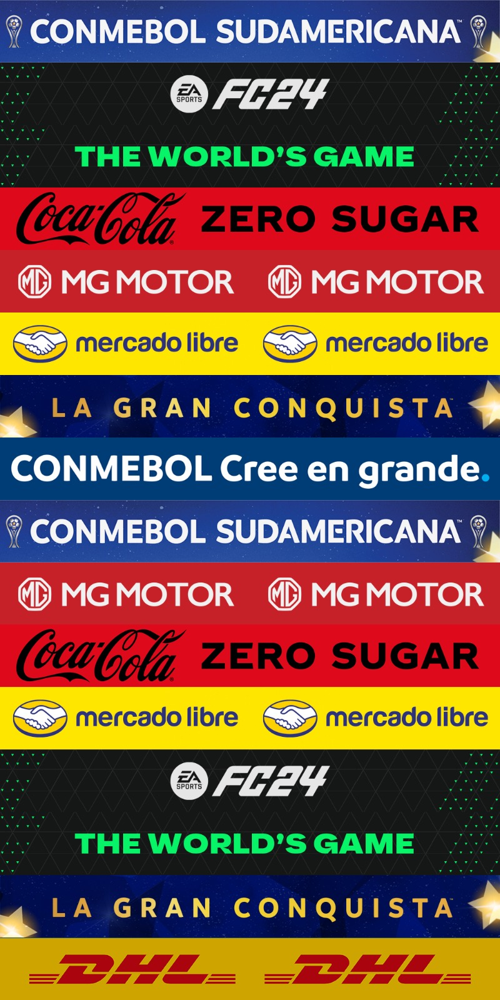
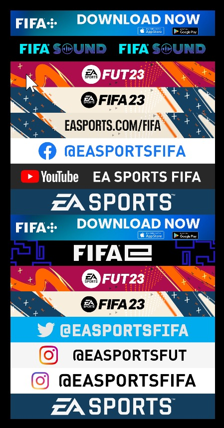

Adboard Processer
EA Sports FC · FIFA · Internal desktop tool · 2023

A desktop tool for turning partner-supplied artwork, 100+ brands, leagues, and clubs, into pipeline-ready EA Sports FC adboards.

EA Sports FC · FIFA · Internal desktop tool · 2023

A desktop tool for turning partner-supplied artwork, 100+ brands, leagues, and clubs, into pipeline-ready EA Sports FC adboards.
